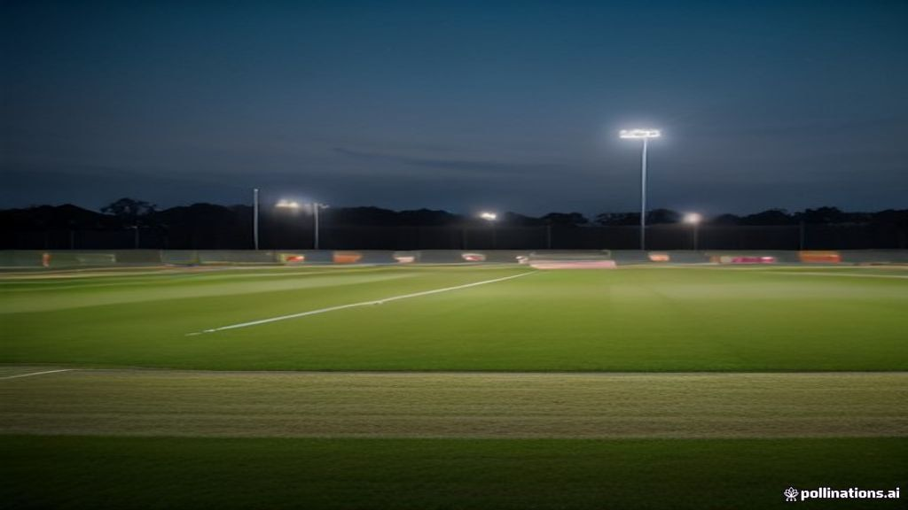

Latest

Champions Trophy 2026 Pitch Engineering: Rawalpindi Adopts Clay-Silt Hybrid Drop-In Pitches for True Bounce and Reverse Swing
Chief curator reveals hybrid soil engineering protocols combining Nandipur clay with alluvial silt to prevent surface crumbling while preserving late afternoon reverse swing.

PCB Establishes National Spin Bowling Academy in Multan: High-Speed Hawk-Eye Vision Tracking and Grip Biomechanics
Pakistan Cricket Board launches dedicated center of excellence for leg-spin, off-spin, and mystery variations under high-speed biomechanical optical surveillance.

The Tactical Shift from Anchor Batting to High-Impact Boundary Percentage in Modern T20s
Pakistan team data analysts demonstrate why maintaining high boundary frequency across overs 7 to 15 produces superior win probabilities compared to conventional wicket-preservation approaches.
 WORKLOAD MANAGEMENT
WORKLOAD MANAGEMENT
Managing the 145+ KPH Pace Battery: High-Performance Center Workload Protocols for Shaheen and Naseem
Biomechanical analysts and physiotherapists at the National Cricket Academy institute GPS tracking and micro-recovery cycles to preserve express fast bowlers during grueling multi-format seasons.
 STADIUM UPGRADES
STADIUM UPGRADES
ICC Delegation Approves Gaddafi and National Stadium Modernization Ahead of Champions Trophy 2026
International Cricket Council venue inspection team validates world-class hospitality enclosures, LED floodlighting grids, and high-drainage subterranean outfields in Lahore and Karachi.
 BREAKING WIRE ⚡
BREAKING WIRE ⚡
Afridi's Captaincy Call: Pakistan Unveils Future Leader for Hong Kong Sixes
The Pakistan Cricket Board (PCB) has officially announced Abbas Afridi as captain for the upcoming Hong Kong Sixes, signaling a strategic investment in the young pace sensation's leadership capabilities and tactical acumen.
Pakistan's Leadership Shake-Up: Babar Azam Steps Down, Shadab Khan Returns to Command Amidst Performance Scrutiny
Pakistan cricket is undergoing a significant leadership change as Babar Azam steps down from captaincy across formats, making way for the dynamic all-rounder Shadab Khan to return to a central leadership role. This pivotal decision follows a period of intense scrutiny over the team's inconsistent performances.
PSL 2027 Calendar Alignment and Player Retention Algorithms: The Tactical Draft Matrix
Franchise analysts develop advanced WAR metrics and matchup indices as global league schedules intensify competition for elite overseas talent.
 PACE INTELLIGENCE ⚡
PACE INTELLIGENCE ⚡
Subcontinental Dew Dynamics: How Modern Reverse-Swing Combats Flat Pitch Batting Bias
Biomechanical breakdown of upright seam orientation, ball maintenance, and 145+ KPH execution on abrasive Lahore and Rawalpindi tracks.
 SQUAD RESTRUCTURING 🏏
SQUAD RESTRUCTURING 🏏
Pakistan Squad Restructuring for Sri Lanka T20Is: Sahibzada Farhan's Tactical Powerplay Blueprint
PCB selectors signal an aggressive transition towards modern strike-rate optimization, granting new leadership responsibilities and pace flexibility.
The 155 KPH Radar: High-Speed Biomechanical Analysis of Naseem Shah's Wrist Seam
High-speed 1000fps sensor capture reveals how Naseem Shah's vertical wrist angle and kinetic chain generate devastating late outswing at 145+ kph.
 VENUE INTEL 🏟️
VENUE INTEL 🏟️
Champions Trophy 2025 Gaddafi Stadium Blueprint: Dew Factor, Pitch Clay & High-Scoring Matrix
Tactical reconnaissance on Lahore's reconstructed flagship arena: analyzing imported Nandipur clay compaction, boundary dimensions, and night dew management.

DATA INTELLIGENCE 📊The Middle-Overs Spin Conundrum: How Pakistan Rebuilt Its Wrist-Spin Analytics Engine
Analyzing dot-ball metrics, release point trajectory, and match-up algorithms between overs 11 and 40 to choke opposition run rates in one-day cricket.
Babar Azam vs High Pace: The Sub-0.2 Second Back-Foot Pivot Against Short-Pitch Bowling
Detailed video frame analysis dissects Babar Azam's balance, weight transfer, and back-foot punch through cover against 145+ kph express bowling.
 DEATH OVERS 🎯
DEATH OVERS 🎯
Wide-Yorker Execution in the Final 3 Overs: How Data Transformed Pakistan's Death Bowling
Statistical breakdown of field manipulation and bowling trajectory aiming 4 inches inside the tramline, denying leg-side leverage to international power hitters.
 خصوصی تجزیہ ⚡
خصوصی تجزیہ ⚡
شاہین، نسیم اور حارث: پاکستان کی 150 کلومیٹر پیس بیٹری کا نیا ٹیکٹیکل پلان اور بائیو مکینکس
آسٹریلیا اور انگلینڈ کے خلاف ڈیتھ اوورز میں ریورس سوئنگ، رسٹ پوزیشن اور اسپیڈ ویری ایشن کا جامع سائنسی جائزہ۔
 تکنیکی مہارت 🏏
تکنیکی مہارت 🏏
بابر اعظم کی تکنیک اور کور ڈرائیو کا تفصیلی تجزیہ: اعداد و شمار کیا کہتے ہیں؟
فرنٹ فٹ موومنٹ، ہائی ایلبو اینگل اور فاسٹ بولرز کے خلاف 89 فیصد کنٹرول ریٹ کے پیچھے کی سائنسی حقیقت۔
آئی سی سی چیمپئنز ٹرافی: لاہور، کراچی اور راولپنڈی اسٹیڈیمز کی اپ گریڈیشن اور پچ تجزیہ
قذافی اسٹیڈیم کا نیا واٹر ڈرینج سسٹم، راولپنڈی کی تیز باؤنسی وکٹیں اور مڈل اوورز میں اسپنرز کا فیصلہ کن کردار۔
ٹی 20 کرکٹ میں ریورس سوئنگ اور وائیڈ یارکرز کا جادو: پاکستانی بولرز کا تاریخی ہتھیار
سرفراز نواز اور وسیم اکرم کے روایتی ہنر سے لے کر جدید دور میں وائیڈ یارکرز کے استعمال تک کا تاریخی سفر۔
پاکستان سپر لیگ (PSL) پلیئر ڈرافٹ، ٹیپ بال ٹیلنٹ اور ڈیٹا اینالیٹکس کا انقلاب
پاکستان کی گلی محلوں سے 150 کلومیٹر فی گھنٹہ کی رفتار سے گیندیں کروانے والے نوجوانوں کی تلاش اور فرنچائزز کی اسمارٹ ہائرنگ۔
Shaheen Shah Afridi’s MCG Masterclass: How Left-Arm Seam Dismantled Australia
Bowling with ferocious late swing at 148 kph, Shaheen delivered a death-overs clinic that left Australia’s top order stunned in Melbourne.
Inside Babar Azam’s Technique: The Cover Drive That Defies Modern Field Placements
A forensic biomechanical breakdown of Pakistan’s anchor, head balance through the crease, and why pace bowlers struggle to pin him down.
The 150+ KPH Club: Why Pakistan’s Fast Bowlers Remain World Cricket’s Most Lethal Asset
From Rawalpindi tape-ball tournaments to modern biometric academies, the science of raw pace in Pakistan cricket.
The Champions Trophy Blueprint: Middle-Overs Spin Choke & Death Execution
Data modeling suggests teams maintaining under 4.8 RPO between overs 11 and 40 hold an 82% win rate on subcontinental pitches.
The Death-Overs Anatomy: Why the Wide Yorker Is Replacing the Blockhole Yorker
Tracking boundary percentages against modern power hitters and why lateral angles matter more than pure straight pace.
The New Gaddafi Stadium: How LED Ring Floods & Pitch Relay Transformed Lahore
A world-class modernization with upgraded turf drainage and drop-in soil technology ready for international marquee clashes.